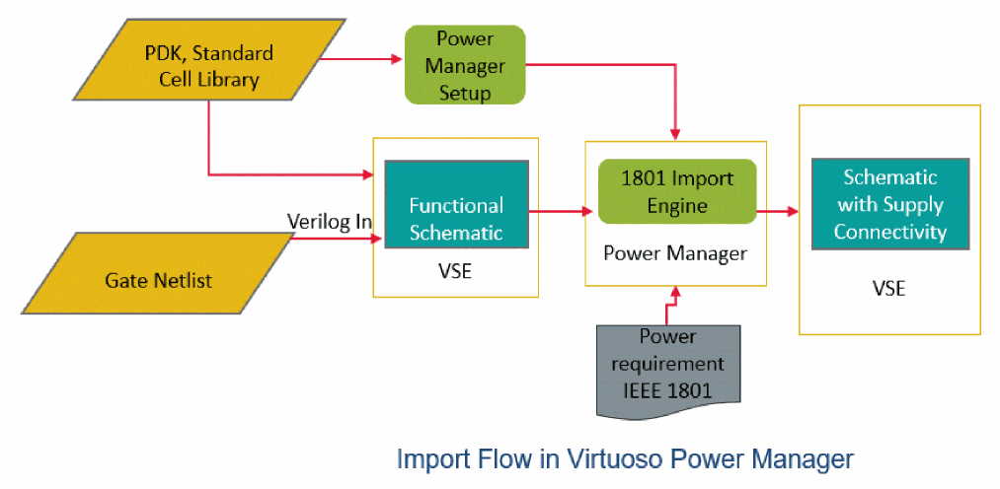

Import Flow
You can import the power intent and utilize it in the following scenarios:
- Use the power intent specified for a design in the top-down power propagation scheme. If you have a hierarchical schematic design for which the power intent is available in a 1801 file, you can import the 1801 file and update the power connectivity of each hierarchical block used in the design as per the power intent. This enables in correctly connecting the power domains of the IP to the power domains of the top design (SOC or a chip).
- If you have a digital block with a Verilog netlist available from a digital place and route tool, supply connectivity can be built for this block by using the Cadence Verilog Import flow along with the initial imported power intent available for SOC where the digital block is integrated. This defines the power requirements across digital and analog boundaries.
- Register special low power cells that are imported from a 1801 special cell definition file. The registered details are consumed by all the designs that use this file for creating the power connectivity of the cells as per their power domains. The special cell definition file is registered to be included as per the setup. For details, refer to Registering Supply Set and Power Domain.
The illustration below gives an overview of the import flow.

Here are the key stages of the import flow.
-
Traversal of design hierarchy to find supply net expressions and explicit terminals.
Elaboration and traversal of the complete design hierarchy is done to identify the standard and special cells that have an associated Liberty model or a special cell definition file. This is done for the supply and topology recognition. These cells are considered as stop cells and the tool does not traverse through these cells for power/ground nets. Only the top level is read to collect the supply information (inherited nets or explicit terminals), which is further mapped to the power/ground information specified in the Liberty model or the special cell definition file. -
Standard and special cells identification using Liberty models or the 1801 special cell definition file.
The special cell rules are read as specified in the input 1801 file to create the corresponding supply connections and resolve them for the top supplies. In a hierarchical design for cells that do not have an associated Liberty or a special cell definition, supply nets information is gathered from the different levels of hierarchy. Power Manager traverses down the hierarchy to the level where it finds supply nets of inherited nets (Net Expressions) or explicit supply terminals. -
Reading the input 1801 power specification.
The power intent is read from the 1801 file and is updated in the design with all the 1801 commands supported by Power Manager. All unsupported commands or unsupported arguments of the supported commands are flagged in the log. -
Creation and optimization of the redirected netSets.
netSet properties are created in the design hierarchy, wherever required. This enables the top-level block to be instantiated in another top-level SoC schematic. The inherited pins are created in the block schematic. The inherited terminals have the same name as the supply nets in the 1801 file. The tie connections are resolved in the design hierarchy. -
Creation of the top-level supply ports and supply nets.
Supply pins are created corresponding to the power domain nets and global nets during 1801 import by reading thecreate_supply_portandcreate_supply_netcommands for a successful LVS check.
Refer to the following scenarios that are considered while creating the pins.- If a pin already exists and it belongs to the same net as mentioned in the 1801 file, it is used.
- To create an inherited pin, a pin that exists in the same net as mentioned in the 1801 file is used. However, the pin net should be global and should match the power domain net for which the pin needs to be created. The pin is converted into an inherited pin by associating a terminal net-expression with the existing pin. If the existing pin is already an inherited pin but with the different net-expression, the net-expression is replaced.
- All pins created during the 1801 import are removed when you click Remove Power Intent. If any pin existed prior to import and was converted to an inherited pin or the net-expression was changed, it is converted back to a normal pin or the original net-expression is restored, respectively.
-
For the 1801 import flow, pins are not created in the design schematic for the supply nets that do not have a corresponding
create_supply_portcommand in the input 1801 file. These supply nets are internally generated supply nets that have a correspondingcreate_supply_netcommand in the input 1801 file.
The direction of the pins created aligns with the direction specified in thecreate_supply_portcommand in the input 1801 file.
Related Topics
Redirected netSet Property Creation and Optimization
Handling of Low Power Special Cells
Support of Hierarchical 1801 for Import Flow
Removing Imported Power Intent
Return to top